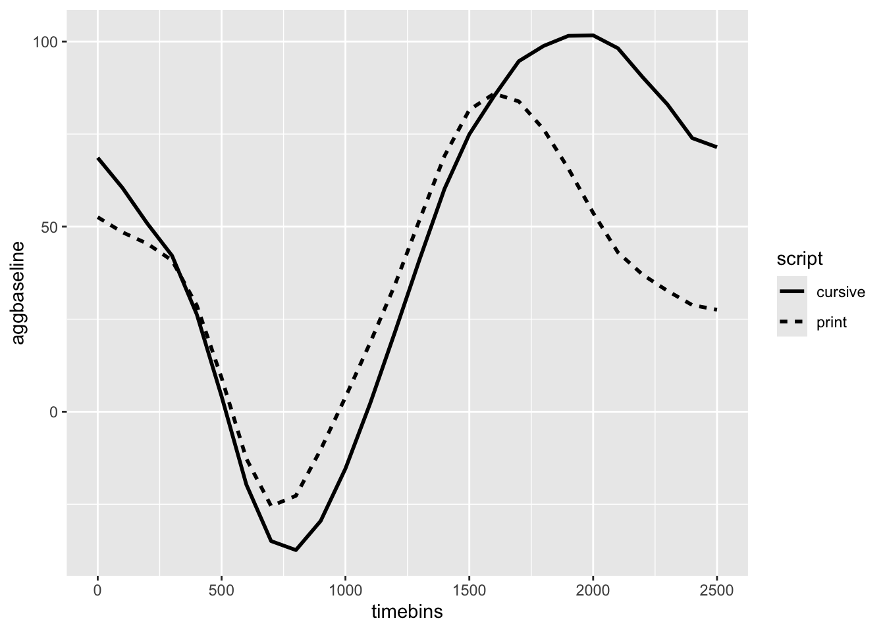
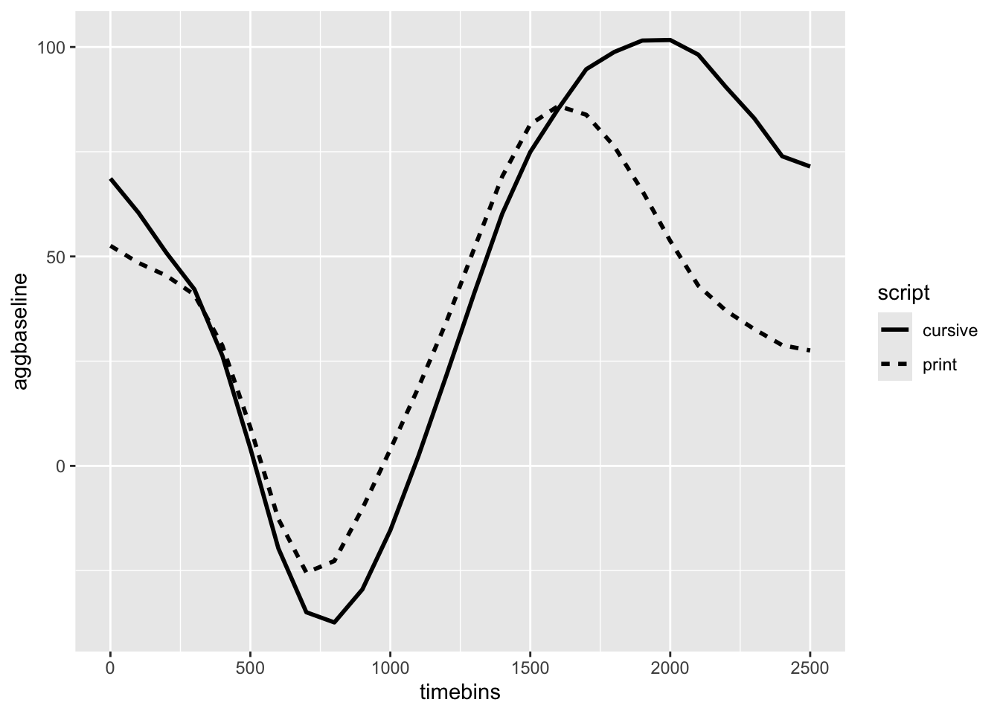
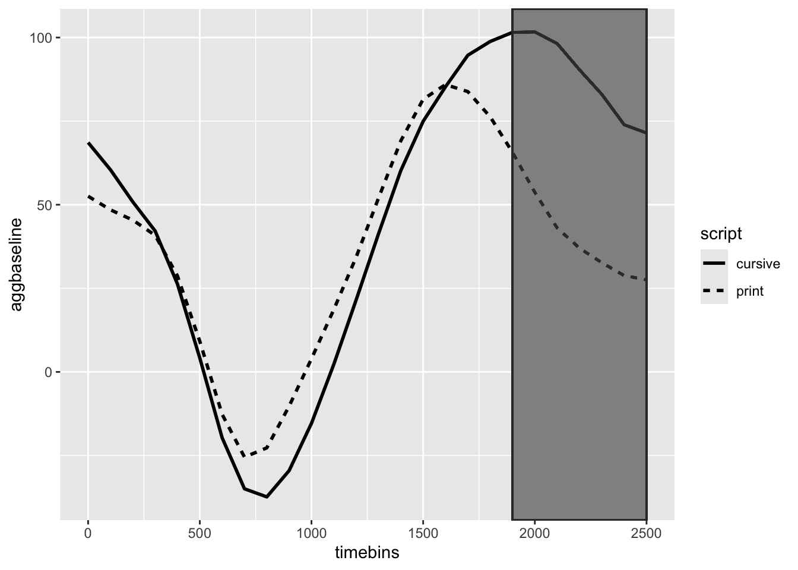

Error in `select()`:
! Can't select columns that don't exist.
✖ Column `X1` doesn't exist.
July 10, 2020
An article by Reilly et al. (2019) raised some important questions/issues for the field of pupillometry. One issue that has been bothering me as of late (hence the post) pertains to objectively defining a time window to look at. Although some commonalities exist across the literature, there is no uniform standard for isolating a peak range or delineating the width of this window. In this blog post I present a method we can use to address this issue. To do so, I will be using the example data set from the gazeR package (Geller et al. (n.d.)). This data comes from a lexical decison experiment where participants judged the lexicality of cursive and type-print stimuli.
In the pupillometry literature, I have seen several different analytic approaches to the above issue. Some will preform seperate statistical tests at each time point (via t tests, LMMs, ANOVAs, regressions, what have you), or they just ignore time altogether and aggregate the data and perfrom analyses on the mean and max. I do not like these approaches for a few reasons:
There is a trade-off between power and temporal resolution (smaller time bins) and introducesbias in selection of time bins/windows. There is also the issues of multiple comparisons and autocorrelation
Does not take into account individual differences
I wanted to highlight a method I believe is a good alternative: cluster-based permutation tests (henceforth CPT)
Let’s first look at a graph of the data.
Error in `select()`:
! Can't select columns that don't exist.
✖ Column `X1` doesn't exist.
From this, we might be tempted to declare a significant difference arisisng ~1500-2500 ms. However, we cannot rely on the graphical analysis and we need a statistical test to be able to affirm that this observation is caused by diffierntial effort between the two scripts.
Permuation cluster analysis is a technique that is becoming increasingly popular, especially in the cognitvie neuropsychology domain to analyze MEG-EEG (Maris & Oostenveld, 2007). While there exists a number of cluster analysis functions in MNE-Python (Gramfort et al., 2014) and Matlab’s FieldTrip (Oostenveld et al., 2011), what I want to show you is how you can do this analysis in R. The implementation of CPT has not been widely used in pupillometry research. I will hopefully show you that it can be a very useful tool to have in your aresenal.
Before I show you how to apply this method, I want to briefly go over the CPT method. The CPT is a data-driven method which increases power and controls for Type I errors across multiple comparisons (exatcly what we need when looking at pupil changes across the time course!). The clustering method involves conducting dependent-sample t-tests for every data point (condition by time). In the first step, adjacent data points that cross the mass-univariate significance threshold (p < .05) are combined to create a cluster. The sum of the t-statistic (or F) are calculated and form the basis for the cluster level statistic. In the second step, a surrogate null-distribution is created by first randomly assigning one of the two conditions within subjects (this is done n times) and retaining the cluster statistic for each randomization. In the third and final step, the cluster level statistic of the real comparison is compared against the null distribution, with clusters falling in the highest or lowest 2.5% considered to be significant.
While writing this blog post, I saw that Dale Barr presented on CPT in the context of eye-tracking. I figured I would take this opportunity to test out the packages he created.
devtools::install_github("dalejbarr/exchangr")
devtools::install_github("dalejbarr/clusterperm")
library(exchangr)
library(clusterperm)The ‘clusterperm’ package has a pretty nifty aov_by_bin function. If we applied a multlipe comparison correction (e.g., holm) to this data.
cur2 <- aov_by_bin(agg_subject, timebins, # clusterperm package
aggbaseline ~ script + Error(subject))
cur2$p_adjuct<-p.adjust(cur2$p, method="holm")
cur2_p=subset(cur2, cur2$p_adjuct <= .05)
knitr::kable(cur2_p)| timebins | effect | stat | p | p_adjuct |
|---|---|---|---|---|
| 2000 | script | 12.97351 | 0.0008456 | 0.0202952 |
| 2100 | script | 17.08613 | 0.0001720 | 0.0044723 |
| 2200 | script | 14.51092 | 0.0004587 | 0.0114670 |
| 2300 | script | 12.96859 | 0.0008473 | 0.0202952 |
How does it compare to CPT?
orig <- detect_clusters_by_effect(cur2, effect, timebins, stat, p)
knitr::kable(orig)| effect | b0 | b1 | sign | cms |
|---|---|---|---|---|
| script | 0 | 100 | 1 | 10.121215 |
| script | 900 | 1000 | -1 | 8.756152 |
| script | 1900 | 2500 | 1 | 82.198279 |
It looks like the multiple comparison correction is less sensitive.
Wait! we do not have p-values!!! Where are the damn p-values!? What is life? How am I suppose to make an informed decison? What is cool about Dale’s R package is that it has a permutation function that allows you to build the null model and obtain those coveted p-values.
dat_prec <- nest(agg_subject, -subject, -script)
nhds_prec <- cluster_nhds(
100, dat_prec, timebins,
aggbaseline ~ script + Error(subject),
shuffle_each, script, subject) # only use 100 permutations. Should use 1000-2000. Error in `tidyr::nest()`:
! In expression named `d`:
Caused by error:
! Can't select columns that don't exist.
✖ Column `timebins` doesn't exist.## get p-values
results_prec <- pvalues(orig, nhds_prec)Error in eval(expr, envir, enclos): object 'nhds_prec' not foundknitr::kable(results_prec)Error in eval(expr, envir, enclos): object 'results_prec' not foundWhew! I feel much better now!
From this graph we can see that there is one signifcant cluster: from 1900-2500 ms. If you were using this as a more explortatory approach (which I think we should), we know have a time period to look at where we can perform more common tests (e.g., max or mean during that time period). We could alternatively make the inference that a difference between cursive and print-type arises somewhere around 1900-2500 ms.
Error in `select()`:
! Can't select columns that don't exist.
✖ Column `X1` doesn't exist.
There are some misunderstandings users should be made aware of when it comes to CPT (see Sassenhagen & Draschkow, 2019) for a nice discussion). If we want to ask more specific questions (i.e., at what exact time points effects arise), CPT with a cluster mass correction is not the method to use. We can only be certain that a difference exists; we cannot make claims about whether individual time points show an effect with a given error rate. I think this is more of an issue for M/EEG than pupillometry though. The pupillary signal is very slow.
Overall, I think CPT can be a very useful tool in determing an appropiate time range to look at, and can even lead to more powerful inferences. Further, the use of CPT obviates the need for multiple comparisons and autocorrelation corrections. However, it does have issues. For instance, it cannot take into account subject and item variability. In addition, it is not able to tell you where within the cluster there is a difference only that there is a difference. And finally, when power is low, clusters may include many false postive time points (Fields & Kuperberg, 2019).
In my next blog, I will discuss applying generalized additive mixed modeling to your pupillometry data. I think it might be the perfect soultion!
@online{2020,
author = {},
title = {Mass {Univariate} {Analysis} for {Pupillometric} {Data:}
{Cluster} {Permutation} {Test}},
date = {2020-07-10},
url = {https://www.drjasongeller.com/blog/posts/2020-07-10-CBPT/},
langid = {en}
}